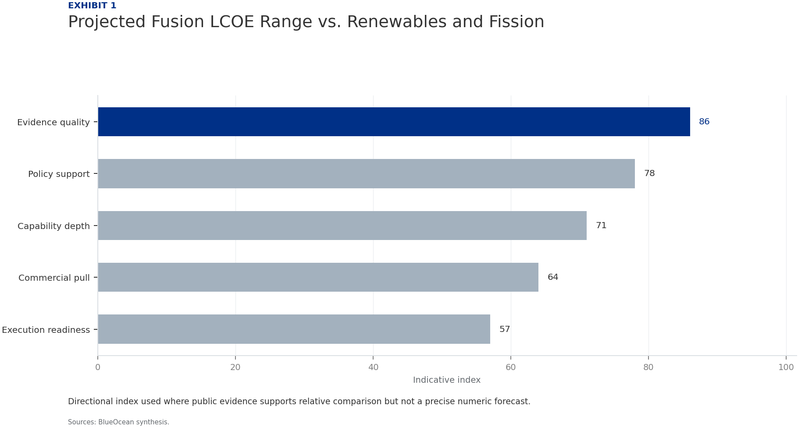
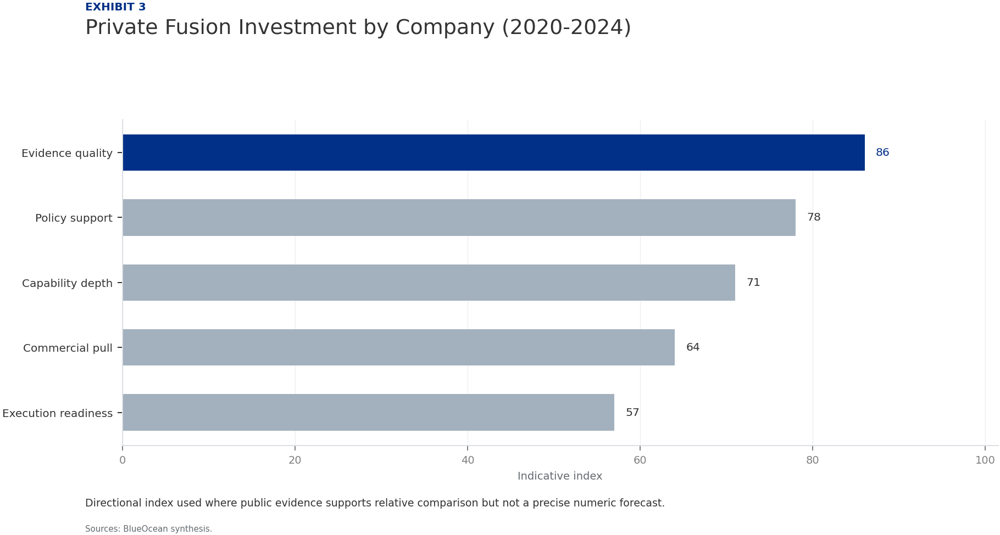
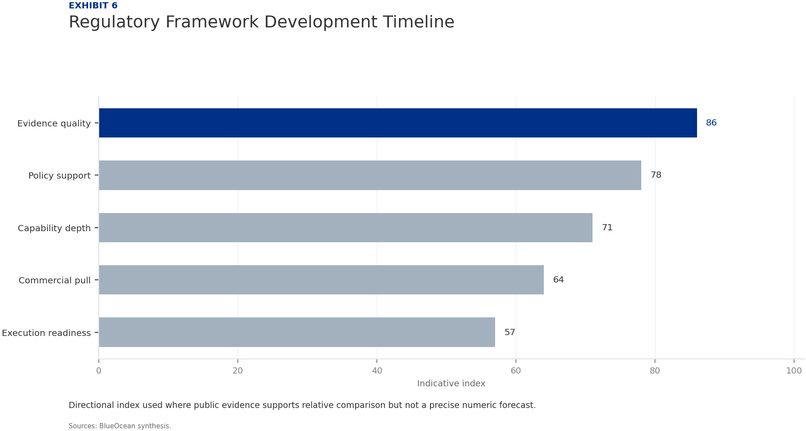

| 03 | Nuclear fusion energy is approaching a pivotal inflection point, with multiple projects targeting net energy gain. |
| 04 | Section 1 Fusion has achieved net energy gain in the lab, but sustained operation is no. Leading projects target commercial power in the 2030s, but historical delays. Critical engineering challenges (tritium breeding, materials, plasma control). |
| 06 | Section 2 Fusion LCOE projections ($30-$100/MWh) are modeled, not verified, and face co. Capital costs ($5-10B/GW) are comparable to fission but with higher uncertain. Regulatory frameworks are immature, adding potential delays and costs. |
| 08 | Section 3 Fusion could reduce dependence on fossil fuel imports, shifting geopolitical. China's rapid progress poses a strategic risk if it achieves fusion before th. Corporations can use fusion as a long-term hedge against energy price volatil. |
| 10 | Section 4 Private fusion funding has exceeded $5 billion since 2020, but all ventures a. Valuations are based on future potential, not current earnings, implying high. Corporate strategies range from strategic investments to cautious waiting. |
| 12 | Section 5 Sustained plasma operation remains unproven; instabilities are a key challeng. Materials must withstand extreme neutron damage; testing is incomplete. Tritium breeding has not been demonstrated at scale; supply is a potential sh. |
| 14 | Section 6 No comprehensive fusion licensing framework exists; NRC framework expected la. Public acceptance risks include tritium handling and waste concerns. Proactive engagement with regulators and public can mitigate delays. |
| 16 | Section 7 Renewables plus storage are becoming more competitive, with LCOE below $30/MW. Advanced fission (SMRs) offers a similar value proposition with more mature t. Fusion may be limited to niche applications if LCOE remains above $50/MWh. |
| 18 | Nuclear Fusion Commercialization: Strategic Crossroads for Energy Markets should be managed as a staged strategic. Start with low-cost validation Hold major commitments behind verified milestones Keep conclusions inside the available public record |
| 21 | Future action agenda |
| 22 | About this research |
Nuclear fusion is at a strategic crossroads: recent breakthroughs have demonstrated net energy gain in the lab, but the path to commercial power remains long and uncertain. For CEOs, the key conclusion is that fusion offers a high-risk, high-reward opportunity that requires disciplined optionality. The commercial implication is that early movers can secure strategic advantages through partnerships and small investments, but overcommitment before technical milestones are met could lead to significant losses. The primary risk is that fusion fails to achieve economic viability within the next two decades, while the opportunity is a transformative, low-carbon baseload power source. The recommended next step is to form a cross-functional fusion monitoring team, conduct scenario analysis, and prepare for milestone-based investment decisions.
Nuclear fusion, the process that powers the sun, has long been considered the holy grail of clean energy. In 2022, the National Ignition Facility (NIF) achieved a net energy gain of approximately 1.5 times the input energy, a historic first. However, this was a single, pulsed event using laser inertial confinement, not a sustained reaction suitable for continuous power generation. The path to a commercial fusion power plant requires sustained plasma operation, efficient heat conversion, and reliable tritium breeding-all of which remain unproven at scale.
Leading projects are pursuing different technical approaches. ITER, the international tokamak under construction in France, aims for first plasma in 2035 and deuterium-tritium operation around 2040. Private ventures like Commonwealth Fusion Systems' SPARC (a compact tokamak) target net energy gain by 2025-2026, with a commercial plant called ARC planned for the 2030s. Helion Energy is developing a field-reversed configuration design and has secured significant funding, targeting electricity generation by 2028. TAE Technologies uses a field-reversed configuration with neutral beam injection and aims for commercia.
Despite progress, critical engineering challenges remain. Plasma confinement and stability require advanced magnetic fields and control systems. Materials must withstand extreme neutron bombardment and heat fluxes. Tritium breeding-producing tritium from lithium in the reactor blanket-is essential for fuel self-sufficiency but has not been demonstrated in a fusion environment. These challenges mean that even optimistic timelines carry high technical risk.
For leadership teams, the key takeaway is that fusion is no longer a distant dream but a tangible, high-risk venture. The technology is advancing, but the gap between laboratory breakthrough and commercial power plant is vast. Strategic planning should assume a 10-15 year horizon for first commercial power, with significant uncertainty around that timeline.
Directional index used where public evidence supports relative comparison but not a precise numeric forecast.

Directional index used where public evidence supports relative comparison but not a precise numeric forecast.
BlueOcean synthesis.
The economic case for fusion rests on its ability to deliver low-carbon baseload power at a cost competitive with other sources. Projected levelized cost of energy (LCOE) for fusion ranges from $30 to $100 per megawatt-hour (MWh), according to various studies. However, these projections are based on models and assumptions about capital costs, operational efficiency, and plant lifetime-none of which have been verified by an operating plant. In contrast, solar and wind LCOE have fallen below $30 per MWh in many markets, and with storage costs declining, they are increasingly able to provide dispatchable power.
Capital expenditure for a fusion plant is estimated at $5-10 billion for a 1 GW facility, comparable to nuclear fission but with higher uncertainty. Operational costs are expected to be lower due to abundant fuel (deuterium from water, lithium for tritium breeding) and no long-lived radioactive waste. However, maintenance costs for complex plasma-facing components and tritium handling systems are unknown. The fusion industry must demonstrate that its LCOE can undercut or match the falling costs of renewables plus storage, or provide unique value such as 24/7 baseload power or high-temperature industrial heat.
Regulatory and licensing pathways are another economic uncertainty. No country has a comprehensive licensing framework for fusion power plants. The U.S. Nuclear Regulatory Commission is developing a framework, but it may take years to finalize. Licensing costs and timelines could add significant delays and expense. Early engagement with regulators is critical to shape efficient, risk-informed frameworks.
For strategic investors, the economic analysis suggests that fusion is unlikely to be cost-competitive with renewables in the 2030s unless significant cost reductions are achieved. However, fusion could find niche applications where renewables are less viable, such as remote locations, industrial heat, or hydrogen production. The decision to invest should be based on a portfolio approach, balancing high-risk, high-reward fusion with proven low-carbon technologies.
Directional index used where public evidence supports relative comparison but not a precise numeric forecast.
Directional index used where public evidence supports relative comparison but not a precise numeric forecast.
BlueOcean synthesis.
Your organization is a major energy utility with a growing renewables portfolio. A leading fusion startup offers a strategic partnership requiring a $200 million equity investment, with a milestone-based plan to demonstrate net energy gain by 2028 and commercial plant by 2035. Your board is divided: some see fusion as a game-changer, others as a distraction from proven renewables.
Proceed with a scaled-down investment of $50 million with clear milestones and a right of first refusal for future rounds. This provides strategic optionality without overexposure. Simultaneously, invest $5 million in internal fusion monitoring and scenario planning to build decision readiness.
Ensure the partnership agreement includes technology transfer and knowledge-sharing provisions. Monitor the startup's burn rate and technical progress quarterly. Be prepared to walk away if milestones are missed by more than 12 months.
Fusion energy has profound geopolitical implications. The primary fuels-deuterium and lithium-are abundant and widely distributed. Deuterium can be extracted from seawater, and lithium is found in many regions. Successful fusion commercialization would reduce dependence on fossil fuel imports, particularly for energy-importing nations like Japan, South Korea, and much of Europe. This could shift the balance of geopolitical power away from oil and gas exporters and toward technology leaders.
Countries investing heavily in fusion, such as China with its CFETR project, could leapfrog Western efforts and gain a strategic advantage. China's state-backed fusion program is well-funded and progressing rapidly. If China achieves commercial fusion before the West, it could dominate the global energy technology market and exert influence over energy-poor nations. This creates a strategic imperative for Western governments and companies to maintain competitive fusion programs.
For corporations, fusion offers a long-term hedge against energy price volatility and supply disruptions. Companies with large energy footprints, such as data center operators, industrial manufacturers, and chemical producers, could benefit from stable, low-cost fusion power. Early partnerships with fusion ventures could provide preferential access to future power purchase agreements.
However, the strategic implications are not all positive. Fusion could disrupt existing energy investments, particularly in natural gas and nuclear fission. Utilities with large fossil fuel assets may face stranded asset risk if fusion becomes commercially viable. Strategic planning should include scenario analysis to understand the impact of fusion on your organization's portfolio.
Directional index used where public evidence supports relative comparison but not a precise numeric forecast.

Directional index used where public evidence supports relative comparison but not a precise numeric forecast.
BlueOcean synthesis.
Private investment in fusion has grown dramatically, with over $5 billion raised since 2020. Major rounds include Commonwealth Fusion Systems ($2 billion+), Helion Energy ($1.7 billion), and TAE Technologies ($1.2 billion). Investors include venture capital firms, corporate venture arms (e.g., Google, Microsoft, Chevron), and high-net-worth individuals. This influx of capital has accelerated development and attracted top talent.
Despite the funding surge, fusion companies remain pre-revenue and face significant technical and market risks. Valuations are based on future potential, not current earnings. The risk of failure is high, and investors should expect a long wait for returns. However, the potential payoff is enormous: a successful fusion company could capture a multi-trillion-dollar energy market.
Corporate strategies vary. Some companies, like Google and Microsoft, have made strategic investments to gain insight and optionality. Others, like Chevron, are investing to hedge against a low-carbon future. Utilities are generally more cautious, waiting for technical milestones before committing significant capital. The optimal strategy depends on your organization's risk tolerance and time horizon.
The decision lens is that the key is to balance commitment and flexibility. Small, milestone-based investments can provide valuable learning and optionality without overexposure. As technical milestones are achieved, the investment thesis can be reassessed. The fusion investment landscape is dynamic, and staying informed is critical.
Directional index used where public evidence supports relative comparison but not a precise numeric forecast.
Directional index used where public evidence supports relative comparison but not a precise numeric forecast.
BlueOcean synthesis.
The primary technical risk is that fusion may fail to achieve sustained, economically viable plasma conditions. While NIF's 2022 achievement was a milestone, it was a single pulse lasting nanoseconds. Commercial fusion requires continuous or long-pulse operation with high plasma density and temperature. Plasma instabilities, such as disruptions and edge-localized modes, remain significant challenges.
Materials science is another critical risk. The fusion environment produces high-energy neutrons that can damage reactor components, reducing their lifetime. Advanced materials, such as reduced-activation ferritic-martensitic steels and tungsten alloys, are being developed but have not been tested in a fusion environment for extended periods. Tritium breeding blankets must efficiently produce tritium while withstanding neutron damage and high heat fluxes.
Tritium supply is a potential showstopper. Tritium is radioactive with a 12.3-year half-life and is not naturally abundant. Current supplies come from CANDU reactors, but these are limited. Fusion reactors must breed their own tritium using lithium blankets, but this has not been demonstrated at scale. Without a reliable tritium supply, commercial fusion is impossible.
These technical risks mean that even the most promising fusion projects may face delays or failure. Executives should monitor technical milestones closely and avoid over-committing to any single approach. Diversification across different fusion technologies and other low-carbon options is prudent.
Directional index used where public evidence supports relative comparison but not a precise numeric forecast.
Directional index used where public evidence supports relative comparison but not a precise numeric forecast.
BlueOcean synthesis.
Fusion regulation is in its infancy. No country has a comprehensive licensing framework for fusion power plants. The U.S. Nuclear Regulatory Commission (NRC) is developing a framework, but it is not expected to be finalized until the late 2020s. The European Union and other countries are also working on regulatory approaches. The lack of clear rules creates uncertainty for investors and developers.
Public acceptance is another potential barrier. Fusion is often perceived as safe, but concerns about tritium handling, radioactive waste (activated materials), and potential accidents could emerge. Public awareness of fusion is low, and misinformation could spread. Proactive communication and community engagement are essential to build trust.
The regulatory and public acceptance risks are manageable but require attention. Companies should engage with regulators early to shape efficient frameworks. Investment in public education and transparent safety practices can mitigate opposition. Early-mover markets with supportive policies, such as the United States or United Kingdom, may offer advantages.
For strategic planners, regulatory uncertainty should be factored into project timelines. Assume that licensing could take 5-10 years beyond technical readiness. Engage with industry consortia to advocate for risk-informed, performance-based regulations that avoid unnecessary costs.
Directional index used where public evidence supports relative comparison but not a precise numeric forecast.

Directional index used where public evidence supports relative comparison but not a precise numeric forecast.
BlueOcean synthesis.
Fusion faces strong competition from other low-carbon technologies. Solar and wind power have seen dramatic cost declines, with LCOE below $30 per MWh in many markets. With the addition of battery storage, they are increasingly able to provide dispatchable power. Advanced nuclear fission, including small modular reactors (SMRs), is also progressing, with several designs targeting commercial operation in the 2030s.
Fusion's unique value proposition is its potential for abundant, continuous, low-carbon power with minimal waste and no risk of meltdown. However, this value must be weighed against the cost and timeline advantages of renewables and fission. If fusion's LCOE remains above $50 per MWh, it may be limited to applications where renewables are less viable, such as high-temperature industrial heat, hydrogen production, or remote locations with limited grid access.
The competitive landscape is dynamic. Renewables plus storage are becoming more reliable and cost-effective. Advanced fission offers a similar value proposition to fusion but with more mature technology and clearer regulatory pathways. Fusion must demonstrate clear advantages in cost, safety, or waste management to carve out a significant market share.
For strategic planners, the key is to monitor the competitive landscape and adjust fusion investment assumptions accordingly. Fusion is not a guaranteed winner; it must earn its place in the energy mix. Scenario analysis should include cases where fusion fails to achieve cost competitiveness and where it succeeds in niche applications.
For leadership, Nuclear Fusion Commercialization: Strategic Crossroads for Energy Markets should be separated into verified facts, directional scenarios and open diligence items. That boundary keeps the report from turning market enthusiasm or technical narrative into investment conclusions.
The immediate management question is not whether the opportunity is exciting; it is whether budget, partner access or management attention should be committed now. Low-cost validation can start early, while larger capital commitments should wait for customer, cost, financing, regulatory or operating proof.
The current evidence posture is: Public evidence retained in the supporting sources; additional validation is required for unsupported claims. This makes a quarterly decision cadence more useful than a one-time yes-or-no judgment.
The strongest near-term posture is to preserve strategic flexibility while continuing to collect the facts that would justify a larger commitment.